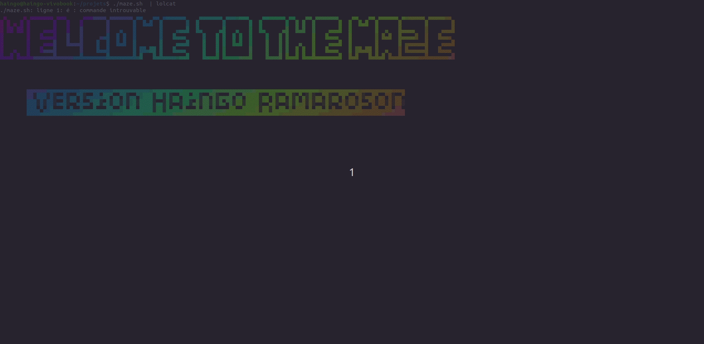

__
| \
______ ____ ______ ________ ______ _______| ▓▓____
| \ \ | \| \/ \ / \ ▓▓ \
| ▓▓▓▓▓▓\▓▓▓▓\ \▓▓▓▓▓▓\\▓▓▓▓▓▓▓▓ ▓▓▓▓▓▓\ | ▓▓▓▓▓▓▓ ▓▓▓▓▓▓▓\
| ▓▓ | ▓▓ | ▓▓/ ▓▓ / ▓▓| ▓▓ ▓▓ \▓▓ \| ▓▓ | ▓▓
| ▓▓ | ▓▓ | ▓▓ ▓▓▓▓▓▓▓/ ▓▓▓▓_| ▓▓▓▓▓▓▓▓__ _\▓▓▓▓▓▓\ ▓▓ | ▓▓
| ▓▓ | ▓▓ | ▓▓\▓▓ ▓▓ ▓▓ \\▓▓ \ \ ▓▓ ▓▓ | ▓▓
\▓▓ \▓▓ \▓▓ \▓▓▓▓▓▓▓\▓▓▓▓▓▓▓▓ \▓▓▓▓▓▓▓\▓▓\▓▓▓▓▓▓▓ \▓▓ \▓▓
Le jeu du labyrinthe
But du projet > écrire un jeu textuel dans lequel le joueur est enfermé dans un layrinthe. Découvre le script dans GitHub.
But du jeu
Le joueur commence dans la pièce 2, la sortie se trouve dans la pièce 6 mais si le joueur va dans la pièce 4 il meurt.
Pour se déplacé de pièce en pièce on doit utiliser les touches:
- n = nord
- s = sud
- w = ouest
- e = est
Projet en image
Projet individuel
